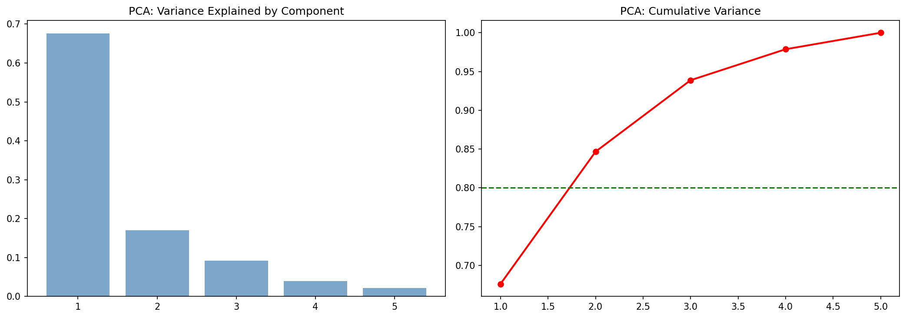
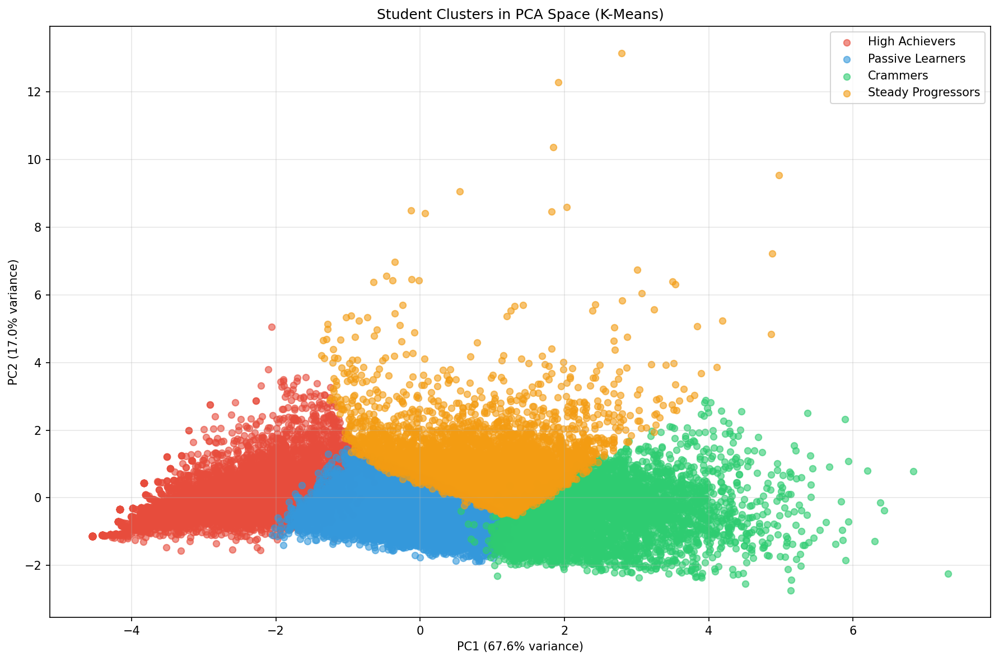
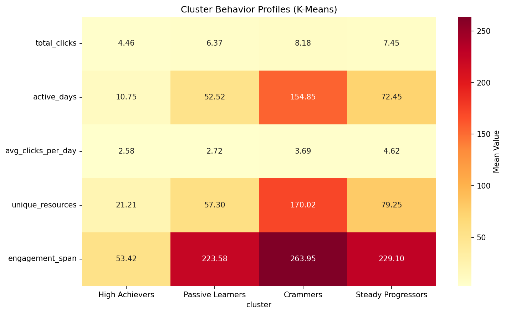
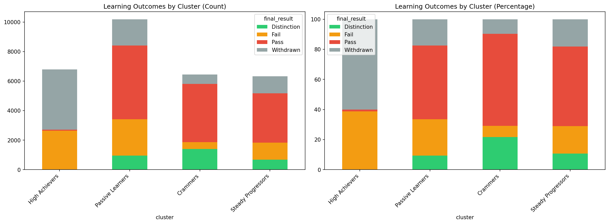

🎓 Student Learning Behavior Clustering
Unsupervised Discovery of 4 Distinct Learner Archetypes + Model Comparison
Students Analyzed
29,741
Clusters
4
K-Means Silhouette
0.311
GMM Silhouette
0.168
🔍 Why 4 Clusters?

Key Finding: Elbow at K=4 with peak silhouette 0.311
📊 Principal Components

Key Finding: PC1 + PC2 explain 84.7% of variance
🎯 The 4 Learner Archetypes (K-Means)

🏆 High Achievers (6792 students)
Consistent, high engagement across the course
😴 Passive Learners (10188 students)
Minimal interaction throughout
⏰ Crammers (6439 students)
Intense bursts near deadlines
📈 Steady Progressors (6322 students)
Regular, consistent pace
🔥 Behavior Profile Heatmap

🎓 Learning Outcomes

| Cluster | Pass Rate | Distinction Rate | Fail Rate | Withdrawn Rate |
|---|---|---|---|---|
| High Achievers | 1.1% | 0.1% | 38.7% | 60.2% |
| Passive Learners | 49.0% | 9.4% | 24.1% | 17.5% |
| Crammers | 61.2% | 21.6% | 7.4% | 9.7% |
| Steady Progressors | 52.9% | 10.7% | 18.2% | 18.2% |
⚔️ K-Means vs Gaussian Mixture Model Comparison
K-Means Clusters
GMM Clusters

Model Comparison:
• K-Means Silhouette: 0.311 vs GMM: 0.168
• K-Means assumes spherical clusters → cleaner separation
• GMM allows elliptical/overlapping clusters → more flexible but sometimes less interpretable
• K-Means Silhouette: 0.311 vs GMM: 0.168
• K-Means assumes spherical clusters → cleaner separation
• GMM allows elliptical/overlapping clusters → more flexible but sometimes less interpretable
💡 Final Conclusions
- Four clear learner archetypes emerged consistently across both models
- Engagement and consistency strongly predict success
- K-Means provides cleaner, more interpretable clusters for educational use
- GMM offers flexibility if cluster shapes are complex